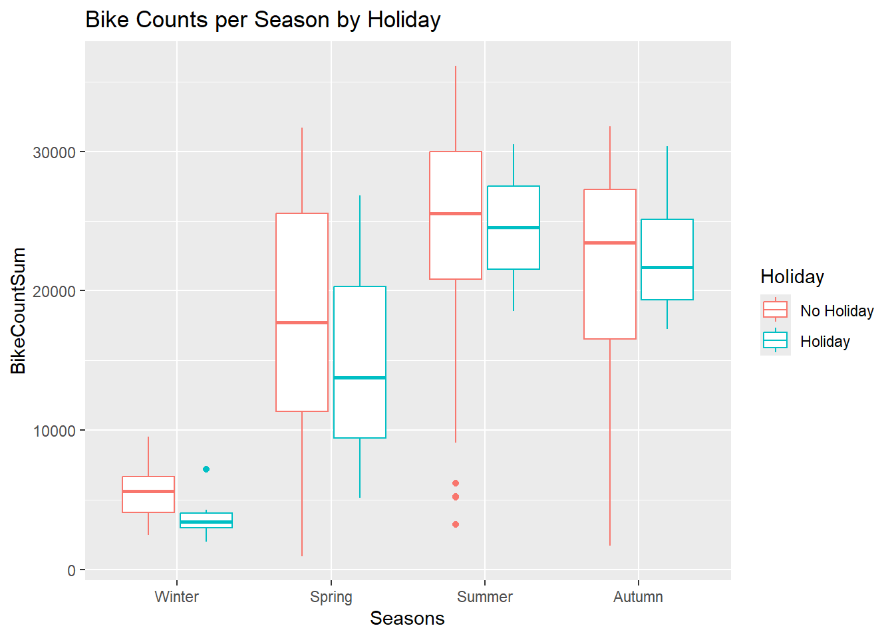
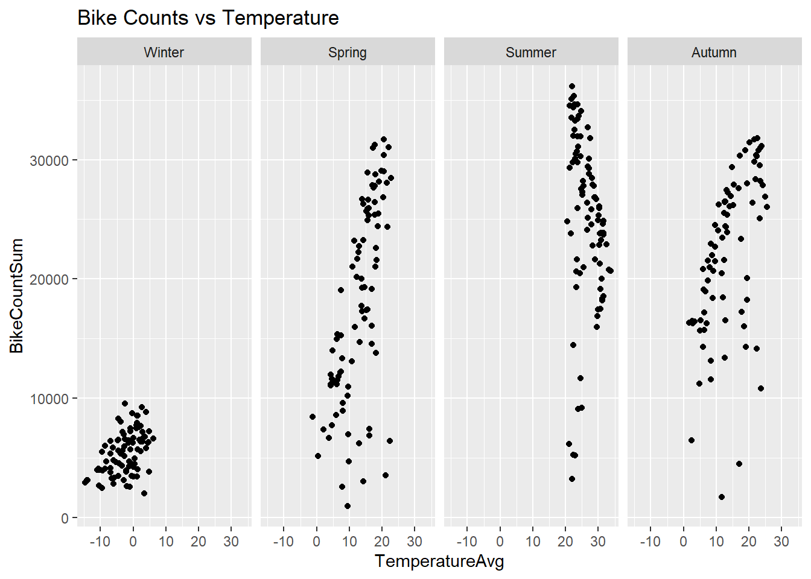
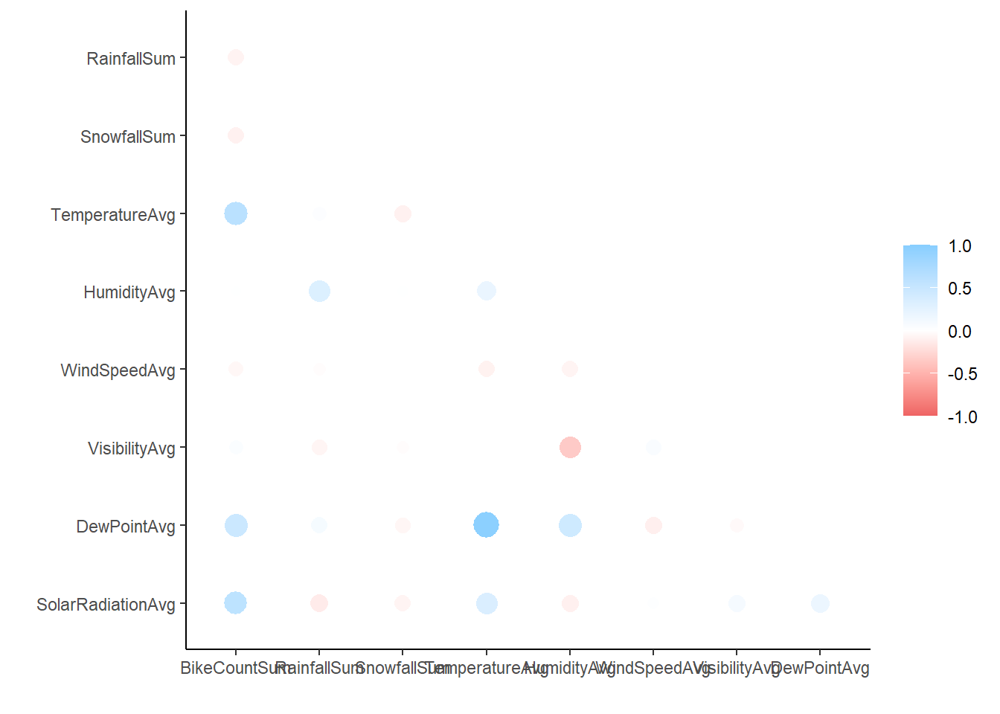

Warning: package 'dials' was built under R version 4.4.2
Warning: package 'infer' was built under R version 4.4.2
Warning: package 'modeldata' was built under R version 4.4.2
Warning: package 'parsnip' was built under R version 4.4.2
Warning: package 'recipes' was built under R version 4.4.2
Warning: package 'rsample' was built under R version 4.4.2
Warning: package 'tune' was built under R version 4.4.2
Warning: package 'workflows' was built under R version 4.4.2
Warning: package 'workflowsets' was built under R version 4.4.2
Warning: package 'yardstick' was built under R version 4.4.2
── Conflicts ───────────────────────────────────────── tidymodels_conflicts() ──
✖ purrr::discard() masks scales::discard()
✖ dplyr::filter() masks stats::filter()
✖ dplyr::lag() masks stats::lag()
✖ recipes::step() masks stats::step()
• Search for functions across packages at https://www.tidymodels.org/find/
── Attaching core tidyverse packages ──────────────────────── tidyverse 2.0.0 ──
✔ forcats 1.0.0 ✔ readr 2.1.5
✔ lubridate 1.9.3 ✔ stringr 1.5.1
── Conflicts ────────────────────────────────────────── tidyverse_conflicts() ──
✖ readr::col_factor() masks scales::col_factor()
✖ purrr::discard() masks scales::discard()
✖ dplyr::filter() masks stats::filter()
✖ stringr::fixed() masks recipes::fixed()
✖ dplyr::lag() masks stats::lag()
✖ readr::spec() masks yardstick::spec()
ℹ Use the conflicted package (<http://conflicted.r-lib.org/>) to force all conflicts to become errors
Warning: package 'corrr' was built under R version 4.4.2
Dataset
The data comes from the UCI Machine Learning Repository. This set is about bike sharing rentals. More details available here. The data description describes the following variables:
Rows: 8760 Columns: 14
── Column specification ────────────────────────────────────────────────────────
Delimiter: ","
chr (4): Date, Seasons, Holiday, Functioning Day
dbl (10): Rented Bike Count, Hour, Temperature(°C), Humidity(%), Wind speed ...
ℹ Use `spec()` to retrieve the full column specification for this data.
ℹ Specify the column types or set `show_col_types = FALSE` to quiet this message.
EDA
Check the data
Now, I need to review the data and clean it up, then summarize it.
`summarise()` has grouped output by 'FunctioningDay'. You can override using
the `.groups` argument.
# A tibble: 6 × 3
# Groups: FunctioningDay [2]
FunctioningDay Seasons `n()`
<fct> <fct> <int>
1 Yes Winter 2160
2 Yes Spring 2160
3 Yes Summer 2208
4 Yes Autumn 1937
5 No Spring 48
6 No Autumn 247
I don’t understand truly what the FunctioningDay field means. The notes say it is a target / response variable, but exactly how to interpret that is unclear to me. I’ll check grouping by this field.
# A tibble: 2 × 4
FunctioningDay Min Max Avg
<fct> <int> <int> <dbl>
1 Yes 2 3556 729.
2 No 0 0 0
Oh, it is simply an indicator of when bikes were available. I presume we do not want to study the days when bikes did not allow usage, so now we will subset to remove those days (FunctioningDay = No).
Let’s visualize this information a few ways - with box and whiskers as well as scatterplots.
g <- data |>ggplot()g +geom_boxplot(aes(x=Seasons,y=BikeCountSum,color=Holiday ) ) +labs(title="Bike Counts per Season by Holiday" )

On holidays, across all seasons, fewer bikes are used. However, the variation in range of max and min bikes used is much smaller on holidays. So, as a light interpretation notwithstanding the much smaller sample size of Holiday data, we might assess that holidays do garner a tight range of activity, consistently.
g +geom_point(aes(x=TemperatureAvg,y=BikeCountSum ) ) +labs(title="Bike Counts vs Temperature" ) +facet_grid(~Seasons)

The shapes here are interesting. In Winter, no matter the temperature, few bikes are used. In the spring, where it can be a bit cool to a bit warm, the number of bikes used quickly grows. In the summer, in high temperatures consistently, if temperature raises slightly, bike rentals decrease rapidly. Autumn is comparable to Spring in shape and range.
Lastly, we display correlations for all numeric variables.
data |>select(where(is.numeric)) |>correlate() |>shave() |>rplot()
Adding missing grouping variables: `Date`, `Seasons`
Non-numeric variables removed from input: `Date`, and `Seasons`
Correlation computed with • Method: 'pearson' • Missing treated using:
'pairwise.complete.obs'

This package corrr has cool features, including this color-coded display of all correlations between numeric variables. Immediately, we can see the strongest relationships with Bike Counts are the Temperature, Dew Point, and Solar Radiation. It’s likely those are interrelated and tell the same story (evidenced by the strong correlation between Temperature and Dew Point shown in the chart, elsewhere). The strongest negative correlation between non-result variables is that of Humidity and Visibility. I don’t normally think of humidity impacting visibility, so that’s interesting; is it because of pollution or am I simply unaware that wet air does impede visibility, perhaps at longer distances?
Split the data
To analyze this data, which is small, we will split into training and test and then use 10-fold CV. In the split, we will use the strata argument to ensure a fair sample across the seasons variable.
First recipe, ignore Date and instead work with weekday/weekend factor. Then standardize numeric variables to make comparable scales. Create dummy variables for seasons, holiday, and the day type.
recipe1 <-recipe(BikeCountSum ~ ., data = data_train) |>#Date into weekend/weekdaystep_date(Date) |>step_mutate(Weekday_Weekend =factor(if_else( (Date_dow =="Sat") | (Date_dow =="Sun"),"Weekend","Weekday") ) ) |>#remove excess original Date fieldsstep_rm(c(Date, Date_dow, Date_month, Date_year) ) |>#normalize numericsstep_normalize(all_numeric(),-all_outcomes() ) |>#dummy vars for categorical itemsstep_dummy(c(Seasons, Holiday, Weekday_Weekend) ) |>#clean up namesstep_rename(isHoliday = Holiday_Holiday,isWeekend = Weekday_Weekend_Weekend,isSummerSeason = Seasons_Summer,isSpringSeason = Seasons_Spring,isAutumnSeason = Seasons_Autumn )# ) |> prep(training=data_train) |>#bake(data_train)#testing |> summary()
Recipe 2
For this recipe, we start with Recipe 1 and add interaction terms between:
For the third recipe, start from Recipe 2 and add quadratic terms for each numeric predictor. Since our dummy variables are technically numeric now, I’m excluding them by avoiding all those beginning with is (like isSpring, etc.).
So, recalling what we are doing here - predicting bike rental volume - it is interesting to note the predictors most likely to relate to bike rental volumes. I think that’s what the lowest p-values represent here, the likelihood that this was a random relationship (slope of zero) with the outcome.
if we are in summer, we are likely to see more rentals
solar radiation increases with rentals, too (related to summer)
on the weekend, we are less likely to see rentals? That surprises me, so I checked my setup to be sure.